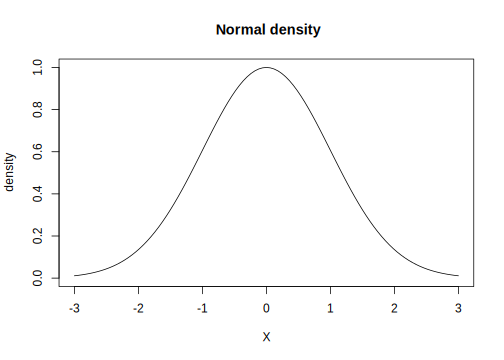

1.2 A discrete random variable with the Binomial distribution
Imagine that our data consist of a sequence of 1’s and 0’s, where 1 represents “success”, and 0 represents “failure”. Assume for now that each 1 and 0 is generated independently from the others. This could be the kind of data we would get if we were asking participants to answer yes/no questions. We can repeatedly generate sequences of \(10\) such data points in R (we will presently show how to do this):
## [1] 1 1 0 1 1 1 1 0 1 1## [1] 0 1 1 0 0 1 1 0 0 1## [1] 1 0 1 1 0 1 0 1 0 1These data are being generated by a discrete random variable \(Y\) with a probability distribution \(p(Y)\) called the Binomial distribution. For discrete random variable, the probability distribution \(p(y)\) is called a probability mass function (PMF). The PMF defines the probability of each possible outcome. In the above example, with \(n=10\) trials, there are 11 possible outcomes: \(0,\dots,10\) successes. Which of these outcomes is most probable depends on a parameter in the Binomial distribution that represents the probability of success. , We will call this parameter \(\theta\). The left-hand side plot in Figure 1.1 shows an example of a Binomial PMF with \(10\) trials and the parameter \(\theta\) with value \(0.5\). Setting \(\theta\) to 0.5 leads to a PMF where the most probable outcome is 5 successes out of 10. If we had set \(\theta\) to, say 0.1, then the most probable outcome would be 1 success out of 10; and if we had set \(\theta\) to 0.9, then the most probable outcome would be 9 successes out of 10.

FIGURE 1.1: Probability mass functions of a binomial distribution assuming 10 trials, with 50%, 10%, and 90% probability of success.
The probability mass function for the binomial is written as follows.
\[\begin{equation} \hbox{Binomial}(n,k|\theta) = {n \choose k} \theta^{k} (1-\theta)^{n-k} \end{equation}\]
Here, \(n\) represents the total number of trials, \(k\) the number of successes, and \(\theta\) the probability of success. The term \(n \choose k\), pronounced n-choose-k, represents the number of ways in which one can choose \(k\) successes out of \(n\) trials. For example, 1 success out of 10 can occur in 10 possible ways: the very first trial could be a 1, the secone trial could be a 1, etc.
1.2.1 The mean and variance of the Binomial distribution
It is possible to analytically compute the mean and variance of the PMF associated with the Binomial random variable \(Y\). Without getting into the details of how these are derived mathematically, we just state here that the mean of \(Y\) (also called the expectation, conventionally written \(E[Y]\)) and variance of \(Y\) (written \(Var(Y)\)) of a Binomial distribution with parameter \(\theta\) and \(n\) trials are \(E[Y] = n\theta\) and \(Var(Y) = n\theta (1-\theta)\), respectively.
Of course, we always know \(n\) (because we decide on the number of trials ourselves), but in real experimental situations we never know the true value of \(\theta\). But \(\theta\) can be estimated from the data. From the observed data, we can compute the estimate of \(\theta\), \(\hat \theta=k/n\). The quantity \(\hat \theta\) is the observed proportion of successes, and is called the maximum likelihood estimate of the true (but unknown mean). Once we have estimated \(\theta\) in this way, we can also obtain an estimate (also a maximum likelihood estimate) of the variance by computing \(n\theta (1-\theta)\). These estimates are then used for statistical inference.
What does the term “maximum likelihood estimate” mean? The term likelihood refers to the value of the Binomial distribution function for a particular value of \(\theta\), once we have observed some data. For example, suppose you record \(n=10\) trials, and observe \(k=7\) successes. What is the probability of observing \(7\) successes out of \(10\)? We need the binomial distribution to compute this value:
\[\begin{equation} \hbox{Binomial}(n=10,k=7|\theta) = {10 \choose 7} \theta^{7} (1-\theta)^{10-7} \end{equation}\]
Once we have observed the data, both \(n\) and \(k\) are fixed. The only variable in the above equation now is \(\theta\): the above function is now only dependent on the value of \(\theta\). Stated in this way, the function is called a likelihood function and can be written simply as a function of \(\theta\): \(\mathcal{L}(\theta)\). If we now plot this function for all possible values of \(\theta\), we get the plot shown in Figure 1.2.

FIGURE 1.2: The likelihood function for 7 successes out of 10.
What is important about this plot is that it shows that, given the data, the maximum point is at the point \(0.7\), which corresponds to the estimated mean using the formula shown above: \(k/n = 7/10\). Thus, the maximum likelihood estimate (MLE) gives us the most likely value that the parameter \(\theta\) has conditional on the data. It is crucial to note here that the phrase ``most likely’’ here does not mean that the MLE necessarily gives us an accurate estimate of \(\theta\). For example, if we run our experiment for \(10\) trials and get \(1\) success out of \(10\), the MLE is \(0.10\). We could have happened to observe only one success out of ten even if the true \(\theta\) were \(0.5\). The MLE would however give an accurate estimate of the true parameter as \(n\) approaches infinity.
1.2.2 What information does a probability distribution provide?
What good is a probability mass function? Bayesian inference depends completely on computing properties of probability distributions of unknown parameters. It is therefore worth understanding what we can do with a probability distribution.
- Compute the probability of a particular outcome (discrete case only): The Binomial distribution shown in Figure 1.1 already shows the probability of each possible outcome under a different value for \(\theta\). In R, there is a built-in function that allows us to calculate the probability of \(k\) successes out of \(n\), given a particular value of \(k\) and the number of trials \(n\) (these constitute our data), and given a particular value of \(\theta\). This is the
dnormfunction. For example, the probability of 5 successes out of 10 when \(\theta\) is 0.5 is:
## [1] 0.2461The probabilities of success when \(\theta\) is 0.1 or 0.9 can be computed by replacing 0.5 above by each of these probabilities. Note that the probability of a particular outcome is only computable in the discrete case; in the case, this probability will always be zero (we discuss this in the next section).
- Compute the cumulative probability of k or less (more) than k successes: Using the
dbinomfunction, we can compute the cumulative probability of obtaining 1 or less, 2 or less successes etc. This is done through a simple summation procedure:
## the cumulative probability of obtaining
## 0, 1, or 2 successes out of 10,
## with theta=0.5:
dbinom(0,size=10,prob=0.5)+dbinom(1,size=10,prob=0.5)+dbinom(2,size=10,prob=0.5)## [1] 0.05469Mathematically, we would write the above as:
\[\begin{equation} \end{equationn} R has a built-in function called ```pbinom``` that does this summation for us. If we want to know the probability of 2 or less successes as in the above example, we can write: ```r pbinom(2,size=10,prob=0.5,lower.tail=TRUE) ``` ``` ## [1] 0.05469 ``` The specification ```lower.tail=TRUE``` ensures that the summation goes from 2 to numbers smaller than 2 (which lie in the lower tail of the distribution in Figure \@ref(fig:binomplot)). If we wanted to know what the probability is of obtaining 2 or more successes out of 10, we can set lower.tail to FALSE: ```r pbinom(2,size=10,prob=0.5,lower.tail=FALSE) ``` ``` ## [1] 0.9453 ``` The cumulative distribution function or CDF can be plotted by computing the cumulative probabilities for any value $k$ or less than $k$, where $k$ ranges from $0$ to $10$ in our running example. The CDF is shown in Figure \@ref(fig:binomcdf). <div class="figure"> <img src="bookdown_files/figure-html/binomcdf-1.svg" alt="The cumulative distribution function for a binomial distribution assuming 10 trials, with 50% probability of success." width="672" /> <p class="caption">(\#fig:binomcdf)The cumulative distribution function for a binomial distribution assuming 10 trials, with 50% probability of success.</p> </div> * **The inverse of the cumulative distribution function (the quantile function)**: We can also find out the value of the variable $k$ (the quantile) such that the probability of obtaining $k$ or less than $k$ successes is some probability value $p$. If we switch the x and y axes of Figure \@ref(fig:binomcdf), we obtain another very useful function, the inverse CDF. This is shown in Figure \@ref(fig:binominvcdf) below. <div class="figure"> <img src="bookdown_files/figure-html/binominvcdf-1.svg" alt="The inverse cumulative distribution function for a binomial distribution assuming 10 trials, with 50% probability of success." width="672" /> <p class="caption">(\#fig:binominvcdf)The inverse cumulative distribution function for a binomial distribution assuming 10 trials, with 50% probability of success.</p> </div> The inverse of the CDF (known as the quantile function in R because it returns the quantile, the value k) is available in R as the function ```qbinom```. The usage is as follows: to find out what the value $k$ of the outcome is such that the probability of obtaining $k$ or less successes is $0.37$, type: ```r qbinom(0.37,size=10,prob=0.5) ``` ``` ## [1] 4 ``` You can confirm that the above answer is correct by using the CDF to find out the probability that k is less than or equal to 4: ```r pbinom(4,size=10,prob=0.5) ``` ``` ## [1] 0.377 ``` <!-- to-do: explain why qbinom(0.77 gives 5 as an answer and not 4)--> * **Generating random data from a $\hbox{Binomial}(n,p)$ distribution**: We can generate random simulated data from a Binomial distribution by specifying the number of trials and the probability of success $\theta$. In R, we do this as follows: ```r rbinom(10,size=1,prob=0.5) ``` ``` ## [1] 1 1 0 1 0 1 0 0 1 1 ``` The above code generates a sequences of 1's and 0's. Repeatedly run the above code; you will get different sequences each time. For each generated sequence, one can calculate the number of successes by just summing up the vector, or computing its mean and multiplying by the number of trials, here 10: ```r y<-rbinom(10,size=1,prob=0.5) mean(y)*10 ; sum(y) ``` ``` ## [1] 6 ``` ``` ## [1] 6 ``` ### The maximum likelihood estimates of the mean and the variance The probability distribution associated with the random variable $Y$ is the binomial distribution mentioned above: ${n \choose k} \theta^k (1-\theta)^{n-k}$. A random variable $X$ is a function $X : S \rightarrow \mathbb{R}$ that associates to each outcome $\omega \in S$ exactly one number $X(\omega) = x$. $S_X$ is all the $x$'s (all the possible values of X, the support of X). I.e., $x \in S_X$. We can also sloppily write $X \in S_X$. Good example: number of coin tosses till H \begin{itemize} \item $X: \omega \rightarrow x$ \item $\omega$: H, TH, TTH,\dots (infinite) \item $x=0,1,2,\dots; x \in S_X$ \end{itemize} Every discrete (continuous) random variable X has associated with it a \textbf{probability mass (distribution) function (pmf, pdf)}. I.e., PMF is used for discrete distribu tions and PDF for continuous. (I will sometimes use lower case for pdf and sometimes upper case. Some books use pdf for both discrete and continuous distributions.) \begin{equation} p_X : S_X \rightarrow [0, 1] \end{equation}\]
defined by
\[\begin{equation} p_X(x) = P(X(\omega) = x), x \in S_X \end{equation}\]
[: Books sometimes abuse notation by overloading the meaning of \(X\). They usually have: \(p_X(x) = P(X = x), x \in S_X\)]
Probability density functions (continuous case) or probability mass functions (discrete case) are functions that assign probabilities or relative frequencies to all events in a sample space.
The expression
\[\begin{equation} X \sim f(\cdot) \end{equation}\]
means that the random variable \(X\) has pdf/pmf \(f(\cdot)\). For example, if we say that \(X\sim N(\mu,\sigma)\), we are assuming that the pdf is
\[\begin{equation} f(x)= \frac{1}{\sqrt{2\pi \sigma^2}} \exp[-\frac{(x-\mu)^2}{2\sigma^2}] \end{equation}\]
We also need a or cdf because, in the continuous case, P(X=some point value) is zero and we need a way to talk about P(X in a specific range). cdfs serve that purpose.
In the continuous case, the cdf or distribution function is defined as:
\[\begin{equation} P(X<x) = F(X<x) =\int_{-\infty}^{X} f(x)\, dx \end{equation}\]
1.2.3 The normalization constant in pdfs
Almost any function can be a pdf as long as the area under the curve sums to 1 over the sample space. Here is an example of a function whose area under the curve doesn’t sum to 1:
\[\begin{equation} f(x)=\exp[-\frac{(x-\mu)^2}{2 \sigma^2}] \end{equation}\]
This is the ``kernel’’ of the normal pdf, and it doesn’t sum to 1. We can show that quickly by writing a function in R that expresses this kernel, and then summing up the area under the curve by integrating the function in R, from -Infinity to +Infinity.
In what is shown below, integrating the function f(x) is written in mathematics as \(\int_{a}^{b} f(x) dx\), and simply means that we sum up the area under the continuous function between the ranges a and b.
## define function:
normkernel<-function(x,mu=0,sigma=1){
exp((-(x-mu)^2/(2*(sigma^2))))
}
## plot kernel density function:
plot(function(x) normkernel(x), -3, 3,
main = "Normal density",ylim=c(0,1),
ylab="density",xlab="X")
## compute area under the curve
## the area under the curve is not equal to 1:
integrate(normkernel,lower=-Inf,upper=Inf)## 2.507 with absolute error < 0.00023So, here, \(\int_{-\infty}^{\infty} f(x) dx=2.51\).
Adding a normalizing constant, \(\frac{1}{\sqrt{2\pi\sigma^2}}\), makes the above kernel density a pdf.
norm<-function(x,mu=0,sigma=1){
(1/sqrt(2*pi*(sigma^2))) * exp((-(x-mu)^2/(2*(sigma^2))))
}
plot(function(x) norm(x), -3, 3,
main = "Normal density",ylim=c(0,1),
ylab="density",xlab="X")
## 1 with absolute error < 9.4e-05Now, \(\int_{-\infty}^{\infty} f(x) dx=1\).